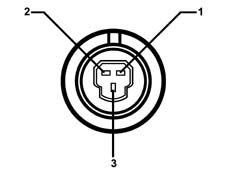

5040BC Check activation/deactivation of climate control compressor from linear sensor
- Path
- Test > 50 AUXILIARY UNITS > 5040 AIR CONDITIONING CASING AND COMPONENTS > 5040B system safety check devices > 5040BC Check activation/deactivation of climate control compressor from linear sensor
- Kind
- test / check procedure
- Applies to
- all engines; all production periods
- Interactive page
- https://sloeber94.github.io/elrnDB-lYpsln/en/#/2429802
Applies to: all engines; all production periods
Disconnect the electrical connector for the linear sensor.

1 Earth 2 Supply 3 Signal
Applies to: all engines; all production periods
Connect a linear potentiometer (end of scale 1 Kohm, previously positioned at aruond 500 ohm between the centre pin and one of the side ones) to the pins for the electrical connector of the linear sensor.
Applies to: all engines; all production periods
Place the key in the ON position
Using a multimeter, check that the voltage between pins 2 (earth) and 3 is about 2.5 V.
Start up the engine and switch the air conditioning on, using the special switch located on the climate control unit.
The climate control system should work properly under these circumstances.
Vary the potentiometer resistance until the reading on the multimeter between pins 1 (earth) and 3 is about 0V.
Under these conditions, the air conditioning system goes off provided the engine control Node receives a low pressure signal from the circuit.
Vary the potentiometer resistance until the reading on the multimeter between pins 1 (earth) and 3 is about 4.6V.
Under these circumstances, the air conditioning should switch off because the engine management node receives the high circuit pressure information.